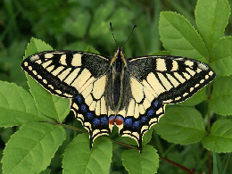

| |
Where 1000s of butterflies take flight! |
|---|
| Home | Our Story | Admission | Events | Butterfly Shop | Forum | Contact Us |
|
| BUTTERFLY SHOWCASE |
| Check out our butterfly conservatory showcasing over 20 butterfly species including: |
| BLUE MORPHO |
|---|
 |
| Submitted by user iosborn22 . Blue morpho butterflys wings are bright blue, edged with black. Blue morpho is among the largest butterflies in the world, with wings spanning from five to eight inches. When blue morpho flies, the contrasting bright blue and dull brown colors flash, making it look like the morpho is appearing and disappearing. |
| OLD WORLD SWALLOWTAIL |
|---|
|  |
| Submitted by user smoothj282 . Papilio machaon, the old world swallowtail, is a species of swallowtail that naturally occurs in Europe, Africa, Asia and even North America. It prefers to lay eggs on Apiaceae plants. It is a medium sized swallowtail that is relatively easy to rear and breed in captivity. |
| Copyright ButterflyWorld 2038 Registration on or use of this site constitutes acceptance of our user agreement. and Privacy Policy. |